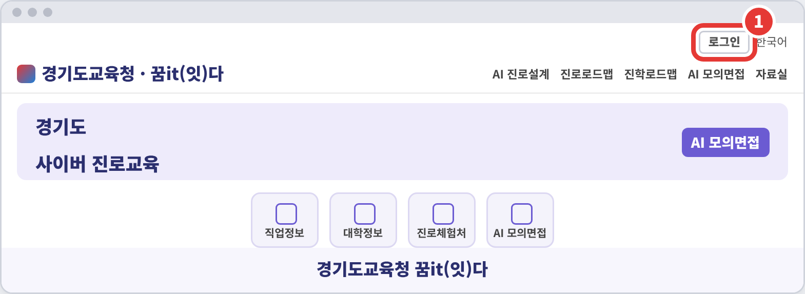
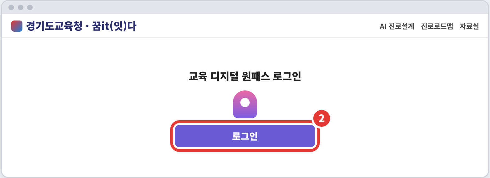
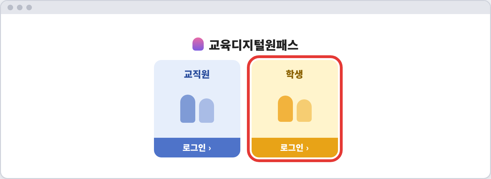
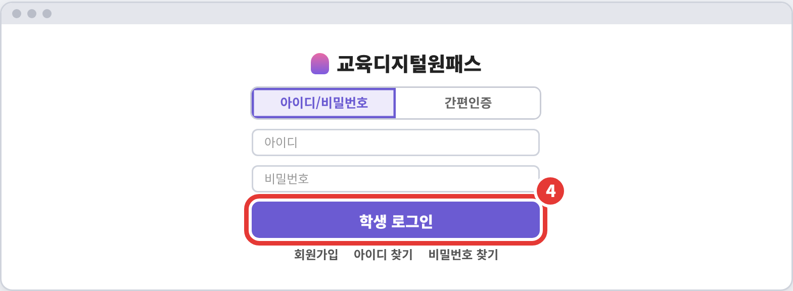
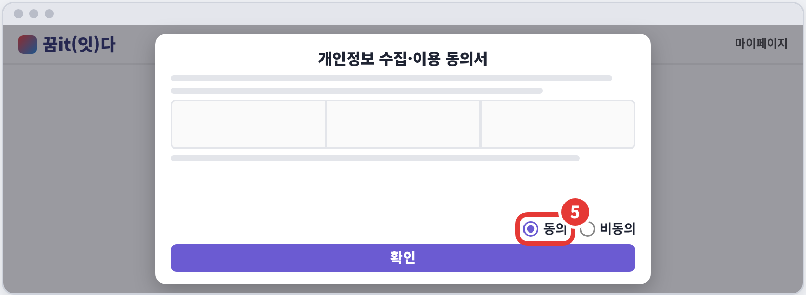
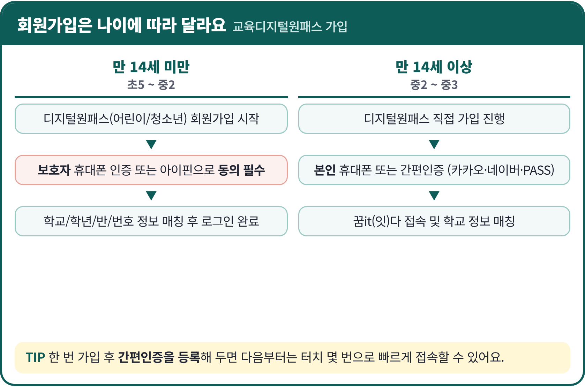
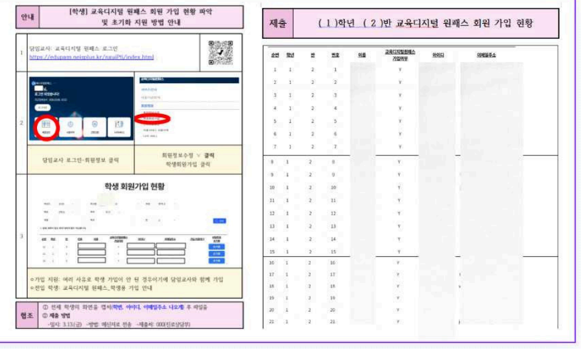
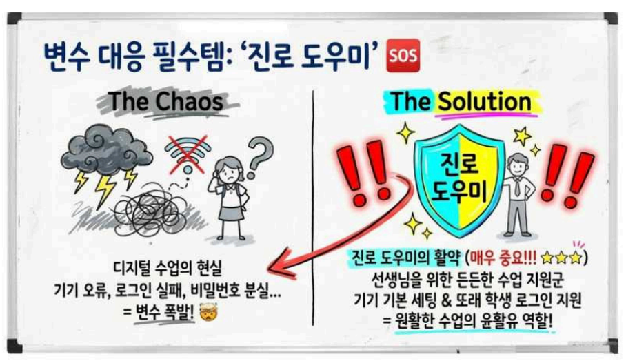

STEP 01 · 자기이해
1-1 꿈it(잇)다
로그인 방법
교육디지털원패스 하나로 꿈it(잇)다에 들어가요
jinro.goedu.kr
매탄중학교 진로상담실
1
꿈it(잇)다 접속 → [로그인]
1-1 로그인 · 1 / 5

- 꿈it(잇)다 메인 페이지에 접속해요.
- 화면 오른쪽 위 [로그인]을 누르면 교육디지털원패스 로그인 페이지로 이동해요.
2
교육 디지털 원패스 로그인
1-1 로그인 · 2 / 5

- ‘교육 디지털 원패스 로그인’ 화면이 나와요.
- 가운데 [로그인] 버튼을 눌러요.
3
[학생] 선택
1-1 로그인 · 3 / 5

- 교직원 / 학생 중 [학생]의 ‘로그인’을 눌러요.
- 교직원 칸을 누르지 않도록 주의해요.
4
아이디 또는 간편인증으로 로그인
1-1 로그인 · 4 / 5

- 2가지 방법 중 하나: 아이디·비밀번호 또는 간편인증
- 입력 후 [학생 로그인] 클릭
- 가입 전이면 [회원가입] 후 다시 접속 · 잊었으면 아이디/비밀번호 찾기
5
처음 접속 시 개인정보 동의
1-1 로그인 · 5 / 5

- 처음 메뉴를 누르면 개인정보 수집·이용 동의서가 떠요.
- [동의] 체크 → [확인]을 누르면 메뉴로 이동!
- [비동의]를 누르면 이용이 제한되고 로그아웃돼요.
회원가입은 나이에 따라 달라요

만 14세 미만 (초5~중2)
보호자 휴대폰 인증 또는 아이핀으로 동의가 꼭 필요해요.
만 14세 이상 (중2~중3)
본인 휴대폰 또는 간편인증(카카오·네이버·PASS)으로 가입해요.
로그인 전에 꼭 기억해요
TIP
받은 아이디는 한곳에 모아 두기!
가정통신문
회원가입 안내와 개인정보 동의서(만 14세 미만)를 확인해요.
주의
비밀번호는 나만 알기 · 공용 PC에서는 꼭 로그아웃!
로그인이 안 되면 담임 선생님 또는 매탄중 진로상담실에 문의해요. 다음은 1-2 검사 전 컨디션 관리!
선생님을 위한 꿀팁 1
시작은 ‘교육디지털원패스’로


담임 선생님께 학생 회원가입 현황을 미리 받아 두면 수업 당일 로그인 시간이 확 줄어요.
접속 · 주소창에 jinro.goedu.kr
메모 · 아이디+비번은 교과서에
주의 · 만 14세 미만은 법정대리인 동의 필수
선생님을 위한 꿀팁 2
변수 대응 필수템 ‘진로 도우미’


명찰 PDF는 매뉴얼 1-1 로그인 방법 페이지의 [진로도우미 명찰 PDF ↓]에서 내려받아 인쇄해요.